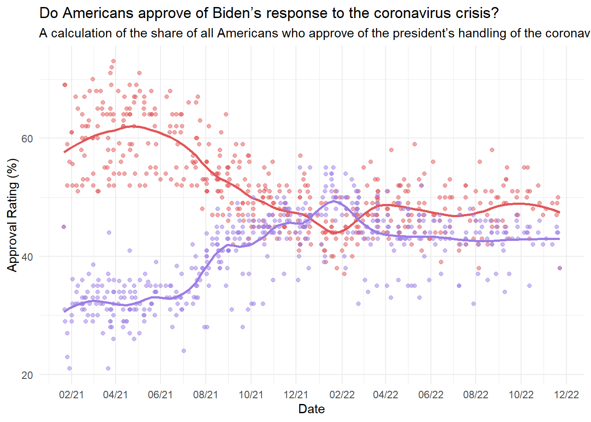
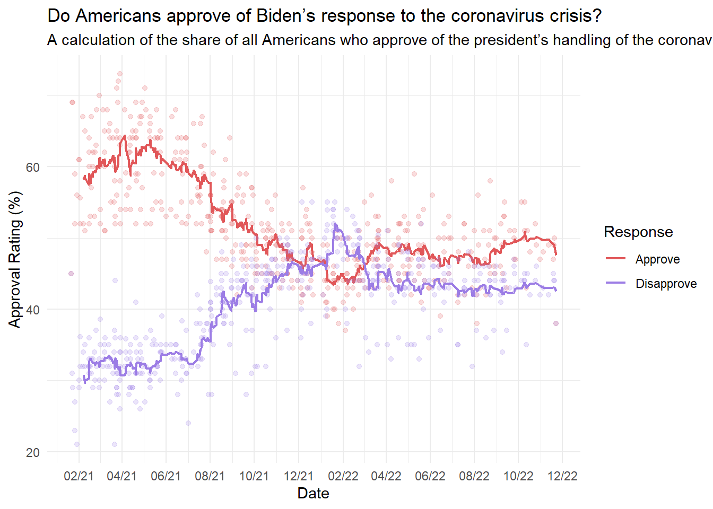

“Ok, I want to replicate a graph I found on this website, https://projects.fivethirtyeight.com/checking-our-work/nfl-games/,
This is the graph:
Code in R, also I provided the data.”
After feeding it the data, ChatGPT made the following graph:
library(ggplot2)
Warning: package 'ggplot2' was built under R version 4.3.3
library(dplyr)
Warning: package 'dplyr' was built under R version 4.3.3
Attaching package: 'dplyr'
The following objects are masked from 'package:stats':
filter, lag
The following objects are masked from 'package:base':
intersect, setdiff, setequal, union
# Load the data (update filename if needed)data_location <- here::here("presentation-exercise", "covid_approval_polls.csv")data <-read.csv(data_location)# Filter for Biden's approval ratingsdata_biden <- data %>%filter(subject =="Biden"& party =="all") %>%mutate(end_date =as.Date(end_date, format="%Y-%m-%d"))# Plot the approval and disapproval ratings over time with smoothingggplot(data_biden, aes(x = end_date)) +geom_point(aes(y = approve), color ="#E15759", alpha =0.5) +geom_smooth(aes(y = approve), color ="#E15759", linewidth =1, span =0.2, method ="loess", se =FALSE) +geom_point(aes(y = disapprove), color ="#9C7DE5", alpha =0.5) +geom_smooth(aes(y = disapprove), color ="#9C7DE5", linewidth =1, span =0.2, method ="loess", se =FALSE) +scale_x_date(date_breaks ="2 months", date_labels ="%m/%y") +labs(title ="Do Americans approve of Biden’s response to the coronavirus crisis?",subtitle ="A calculation of the share of all Americans who approve of the president’s handling of the coronavirus outbreak",x ="Date",y ="Approval Rating (%)",color ="Response") +theme_minimal()
`geom_smooth()` using formula = 'y ~ x'
`geom_smooth()` using formula = 'y ~ x'

As you can see, the resulting graph was very smooth compared to the original. It has a line down the middle lacking any of the jaggedness of the original. For reference, here is the original one created by FiveThirtyEight.
With this next iteration, I asked ChatGPT to reintroduce some of the jaggedness of the original graph. It gave me a satisfactory graph but I tweaked the smoothing to try to get a bit closer to the original. In the end, it does not perfectly mimic the FiveThirtyEight graph, however, I think it looks pretty similar. I also added in a legend.
The following objects are masked from 'package:base':
as.Date, as.Date.numeric
# Load the data (update filename if needed)data_location <- here::here("presentation-exercise", "covid_approval_polls.csv")data <-read.csv(data_location)# Filter for Biden's approval ratingsdata_biden <- data %>%filter(subject =="Biden"& party =="all") %>%mutate(end_date =as.Date(end_date, format="%Y-%m-%d")) %>%arrange(end_date) %>%mutate(approve_smooth =rollmean(approve, k =12, fill =NA, align ="right"),disapprove_smooth =rollmean(disapprove, k =12, fill =NA, align ="right"))# Plot the approval and disapproval ratings over timeggplot(data_biden, aes(x = end_date)) +geom_point(aes(y = approve), color ="#E15759", alpha =0.2) +geom_line(aes(y = approve_smooth, color ="Approve"), linewidth =0.8) +geom_point(aes(y = disapprove), color ="#9C7DE5", alpha =0.2) +geom_line(aes(y = disapprove_smooth, color ="Disapprove"), linewidth =0.8) +scale_x_date(date_breaks ="2 months", date_labels ="%m/%y") +labs(title ="Do Americans approve of Biden’s response to the coronavirus crisis?",subtitle ="A calculation of the share of all Americans who approve of the president’s handling of the coronavirus outbreak",x ="Date",y ="Approval Rating (%)",color ="Response") +scale_color_manual(values =c("Approve"="#E15759", "Disapprove"="#9C7DE5") ) +theme_minimal()
Warning: Removed 11 rows containing missing values or values outside the scale range
(`geom_line()`).
Removed 11 rows containing missing values or values outside the scale range
(`geom_line()`).

Creating the table was a bit more tricky. At first, I had created a table with average approval and disapproval rates. Additionally, the table had a net approval column, subtracing disapproval from approval. Lastly, the original copy of the table had1 month change in approval and disapproval columns.
To better fit the requirements of the assignment, I needed to implement some form of color, boldness, and visual. I chose to color the observations corresponding to the approval and disapproval ratings, communicating changes in these values through saturation of color. I also wanted to bold the highest values, as they might be of most interest. For the visual, I chose to do a sparkline to track approval overtime. For these parts, I needed ChatGPT’s help as I was not familiar with these more advanced concepts. I took it one by one, first asking it to make the approval column green and increase it with intensity as it increased. I also prompted it to make disapproval red and increase the saturation with its increase as well. Next, I asked it to bold the highest values of the three columns of interest. Lastly, I asked ChatGPT to create sparklines for the approval trend overtime. I asked it to try to make it simple and to try not to utilize too many packages. The resulting product is below.
The following objects are masked from 'package:base':
date, intersect, setdiff, union
library(gt)
Warning: package 'gt' was built under R version 4.3.3
library(gtExtras)
Warning: package 'gtExtras' was built under R version 4.3.3
library(purrr)# aggregate the data by month and compute additional columnsmonthly_data <- data_biden %>%mutate(month =floor_date(end_date, "month")) %>%group_by(month) %>%summarise(approve_avg =mean(approve_smooth, na.rm =TRUE),disapprove_avg =mean(disapprove_smooth, na.rm =TRUE),net_approval =mean(approve_smooth - disapprove_smooth, na.rm =TRUE) ) %>%arrange(month) %>%mutate(approve_trend = approve_avg -lag(approve_avg),disapprove_trend = disapprove_avg -lag(disapprove_avg) ) %>%tail(12) # create a list-column containing approval history up to each monthmonthly_data <- monthly_data %>%mutate(approval_history =map(seq_along(approve_avg), ~ approve_avg[1:.x]))# build the gt table with a sparkline column for approval trendsmonthly_data %>%mutate(month =format(month, "%B %Y")) %>%gt() %>%gt_plt_sparkline(approval_history, type ="default") %>%cols_label(month ="Month",approve_avg ="Avg Approval (%)",disapprove_avg ="Avg Disapproval (%)",net_approval ="Net Approval",approve_trend ="1-Month Approval Change",disapprove_trend ="1-Month Disapproval Change",approval_history ="Approval Trend" ) %>%fmt_number(columns =c(approve_avg, disapprove_avg, net_approval, approve_trend, disapprove_trend),decimals =1 ) %>%# color corresponding to gains in approval or disapprovaldata_color(columns = approve_avg,colors = scales::col_numeric(palette =c("#E6F4EA", "#2E7D32"), domain =NULL ) ) %>%data_color(columns = disapprove_avg,colors = scales::col_numeric(palette =c("#FDEDEC", "#C62828"), domain =NULL ) ) %>%data_color(columns = net_approval,colors = scales::col_numeric(palette =c("#FFCCCC", "#FFFFFF", "#99FF99"), domain =NULL ) ) %>%tab_header(title ="Biden's Monthly COVID-19 Approval Ratings",subtitle ="Averaged approval and disapproval ratings by month " ) %>%# bold highest values for each columntab_style(style =list(cell_text(weight ="bold")),locations =cells_body(columns = approve_avg,rows = approve_avg ==max(approve_avg, na.rm =TRUE) ) ) %>%tab_style(style =list(cell_text(weight ="bold")),locations =cells_body(columns = disapprove_avg,rows = disapprove_avg ==max(disapprove_avg, na.rm =TRUE) ) ) %>%tab_style(style =list(cell_text(weight ="bold")),locations =cells_body(columns = net_approval,rows = net_approval ==max(net_approval, na.rm =TRUE) ) ) %>%# make the font blacktab_style(style =list(cell_text(color ="black") ),locations =cells_body(columns =everything() ) ) %>%tab_footnote(footnote ="Approval ratings are shaded from light green (low) to dark green (high). Disapproval ratings are shaded from light red (low) to dark red (high). Net approval is colored from red (negative) to white (neutral) to green (positive). Bolded values indiciate the highest of this recorded time period.",locations =cells_column_labels(columns =c(approve_avg, disapprove_avg, net_approval) ) ) %>%tab_options(table.border.top.color ="black",table.border.bottom.color ="black",heading.align ="center" )
Warning: Since gt v0.9.0, the `colors` argument has been deprecated.
• Please use the `fn` argument instead.
This warning is displayed once every 8 hours.
`geom_line()`: Each group consists of only one observation.
ℹ Do you need to adjust the group aesthetic?
Biden's Monthly COVID-19 Approval Ratings
Averaged approval and disapproval ratings by month
Month
Avg Approval (%)1
Avg Disapproval (%)1
Net Approval1
1-Month Approval Change
1-Month Disapproval Change
Approval Trend
December 2021
47.4
45.4
2.0
−0.5
0.0
January 2022
44.5
48.8
−4.3
−2.9
3.4
February 2022
44.8
48.1
−3.3
0.3
−0.7
March 2022
48.1
44.1
3.9
3.2
−4.0
April 2022
48.4
43.8
4.5
0.3
−0.3
May 2022
48.3
43.4
4.9
−0.1
−0.4
June 2022
47.0
43.5
3.5
−1.3
0.1
July 2022
47.3
42.4
4.9
0.3
−1.1
August 2022
47.1
42.9
4.2
−0.2
0.5
September 2022
49.1
42.5
6.6
2.0
−0.4
October 2022
50.1
43.4
6.7
1.0
1.0
November 2022
49.0
43.0
6.0
−1.1
−0.5
1 Approval ratings are shaded from light green (low) to dark green (high). Disapproval ratings are shaded from light red (low) to dark red (high). Net approval is colored from red (negative) to white (neutral) to green (positive). Bolded values indiciate the highest of this recorded time period.
Overall, ChatGPT served as a great tool to help replicate and create visualizations and tables. Throughout this assignment, I faced prompting issues as I was not as specific as I could have been. For example, when creating the table, color assignment was off as it started using red and purple from the graph. Also, some of the column labels were often vague, which required me to go in and edit the code as necessary.